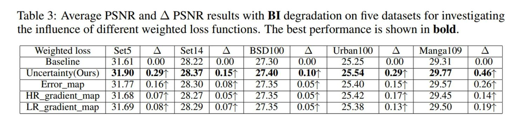
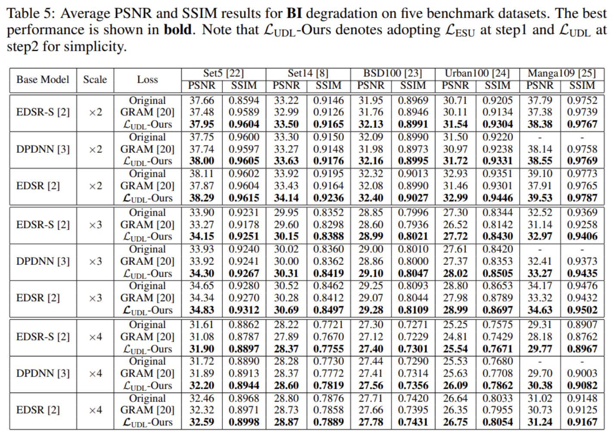
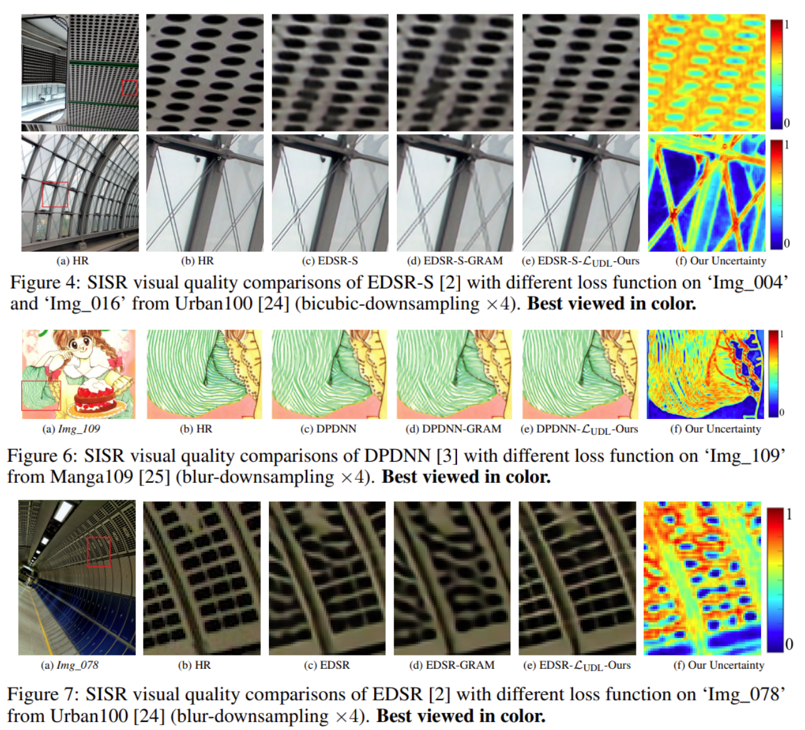

Abstract
In low-level vision such as single image super-resolution (SISR), traditional MSE or L_1 loss function treats every pixel equally with the assumption that the importance of all pixels is the same. However, it has been long recognized that texture and edge areas carry more important visual information than smooth areas in photographic images. How to achieve such spatial adaptation in a principled manner has been an open problem in both traditional model-based and modern learning-based approaches toward SISR. In this paper, we propose a new adaptive weighted loss for SISR to train deep networks focusing on challenging situations such as textured and edge pixels with high uncertainty. Specifically, we introduce variance estimation characterizing the uncertainty on a pixel-by-pixel basis into SISR solutions so the targeted pixels in a high-resolution image (mean) and their corresponding uncertainty (variance) can be learned simultaneously. Moreover, uncertainty estimation allows us to leverage conventional wisdom such as sparsity prior for regularizing SISR solutions. Ultimately, pixels with large certainty (e.g., texture and edge pixels) will be prioritized for SISR according to their importance to visual quality. For the first time, we demonstrate that such uncertainty-driven loss can achieve better results than MSE or L_1 loss for a wide range of network architectures. Experimental results on three popular SISR networks show that our proposed uncertainty-driven loss has achieved better PSNR performance than traditional loss functions without any increased computation during testing.
Paper & Code & Demo
Experimental Results


Result Visualization

Citation
@inproceedings{ning2021uncertainty,
title={Uncertainty-Driven Loss for Single Image Super-Resolution},
author={ Ning Qian and Dong, WeiSheng and Li, Xin and Wu, Jinjian and Shi, Guangming},
booktitle={Advances in Neural Information Processing Systems},
year={2021}
}
Concat
Qian Ning, Email: ningqian@stu.xidian.edu.cn
Weisheng Dong, Email: wsdong@mail.xidian.edu.cn
Xin Li, Email: xin.li@mail.wvu.edu
Jinjian Wu, Email: jinjian.wu@mail.xidian.edu.cn
Guangming Shi, Email: gmshi@xidian.edu.cn
Comment